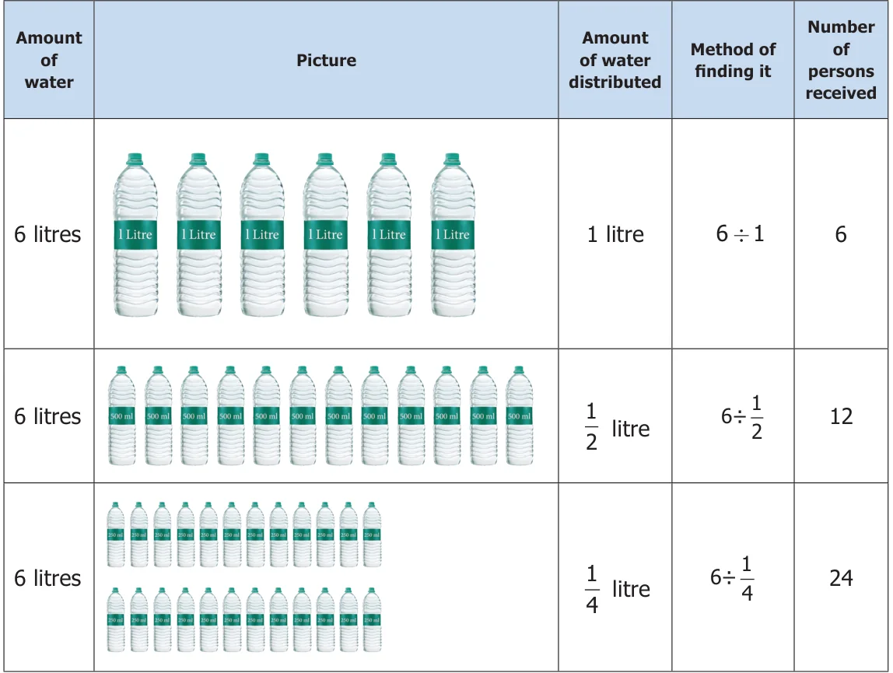
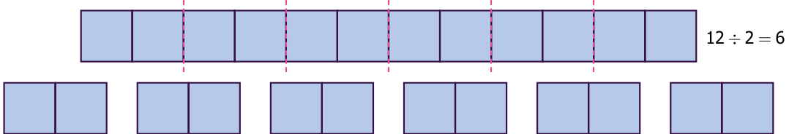
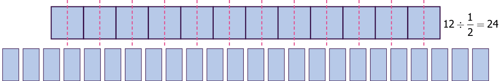

Think about the situation 1
A camp was organized in a school in which 12 students participated. The camp leader wanted to divide them into groups of 2 students. How many groups were there?
There were 6 groups which was got by the division of 12 by 2. That is \(12 \div 2 = 6\) which means there are six 2’s in 12.
If the camp leader distributes 6 litres of water in \(\frac{1}{2}\) litre water bottles to the students, then how many students will get water bottles? This means finding how many \(\frac{1}{2}\) litres are there in 6 litres. For this we need to calculate \(6 \div \frac{1}{2}\).
Solution Let us describe the situation

This means that if you share 6 litres of water into 1 litre bottles, 6 persons can get water. If you share in \(\frac{1}{2}\) litre water bottles, 12 persons can get water. If you share it in \(\frac{1}{4}\) litre water bottles, 24 persons can get water. That is
We can illustrate this in the following diagram. We divide each circle into halves such that each part is \(\frac{1}{2}\) of the whole. The number of such halves would be \(6 \div \frac{1}{2}\). In the figure how many halves do you see? There are 12 halves. So \(6 \div \frac{1}{2} = 6 \times 2 = 12\).
As one circle has 2 halves, 6 circles will have 12 halves \(= 6 \times 2\). Therefore, \(6 \div \frac{1}{2} = 6 \times 2 = 12\)
Here, we can observe that, dividing a whole number 6 by a fraction \(\frac{1}{2}\) is the same as multiplying a whole number 6 by 2, where 2 is the reciprocal of \(\frac{1}{2}\). Generally, dividing a number by a fraction is the same as multiplying that number by the reciprocal of the fraction.
Let us discuss the same situation in another way. Let us take a bar of length \(12\,cm\)
How many \(2\,cm\) bars are there in a \(12\,cm\) bar?

Now find how many \(\frac{1}{2}\) cm bars are there in a \(12\,cm\) bar?

Let us observe and complete the following:
- \(\frac{3}{7} \times \frac{7}{3} = \frac{21}{21} = 1\)
- \(\frac{1}{9} \times 9 = \frac{9}{9} = 1\)
- \(8 \times \frac{1}{8} = \frac{8}{8} = ?\)
- \(\frac{13}{4} \times ? = 1\)
- \(\frac{4}{3} \times ? = 1\)
From the above, we can see that the Product of a fraction and its reciprocal is always 1.
Example 19 Kandan shares \(\frac{1}{2}\) piece of a cake between 2 persons. What will be the share of each?
Solution To know the share, we need to find \(\frac{1}{2} \div 2\)
\(\frac{1}{2} \div 2 = \frac{1}{2} \times \frac{1}{2}\) (reciprocal of 2 is \(\frac{1}{2}\))
\(= \frac{1}{2} \times \frac{1}{2} = \frac{1 \times 1}{2 \times 2} = \frac{1}{4}\)
Try these
- How many 6s are there in 18?
- How many \(\frac{1}{4}\) s are there in 5?
- \(\frac{1}{3} \div 5 = ?\)
Example 20 Divide \(4\frac{1}{2}\) by \(3\frac{1}{2}\)
Solution
\(4\frac{1}{2} \div 3\frac{1}{2} = \frac{9}{2} \div \frac{7}{2}\)
\(= \frac{9}{2} \times \frac{2}{7}\) (reciprocal of \(\frac{7}{2}\) is \(\frac{2}{7}\))
\(= \frac{9}{7}\)
Example 21 An oil tin contains \(7\frac{1}{2}\) litres of oil which is poured in \(2\frac{1}{2}\) litres bottles. How many bottles are required to fill \(7\frac{1}{2}\) litres of oil?
Solution
The number of bottles required \(= \frac{15}{2} \div \frac{5}{2} = \frac{15}{2} \times \frac{2}{5}\) (reciprocal of \(\frac{5}{2}\) is \(\frac{2}{5}\))
\(= 3\) bottles
Example 22 A rod of length 6m is cut into small rods of length \(1\frac{1}{2}\,m\) each. How many small rods can be cut?
Solution
The number of small rods \(= 6 \div 1\frac{1}{2}\)
\(= 6 \div \frac{3}{2}\)
\(= 6 \times \frac{2}{3}\) (reciprocal of \(\frac{3}{2}\) is \(\frac{2}{3}\))
\(= 4\) rods
Try these
- Find the value of \(5 \div 2\frac{1}{2}\).
- Simplify: \(1\frac{1}{2} \div \frac{1}{2}\)
- Divide \(8\frac{1}{2}\) by \(4\frac{1}{4}\).